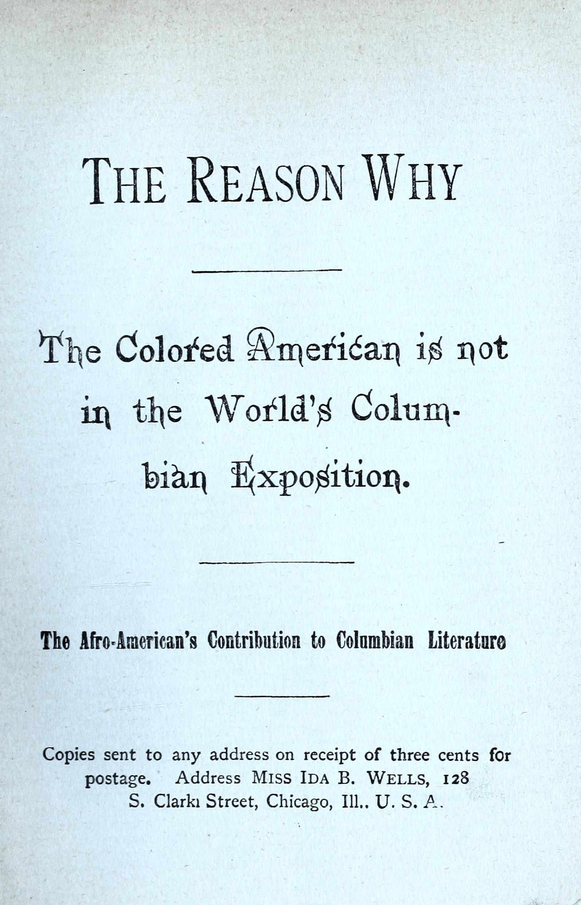
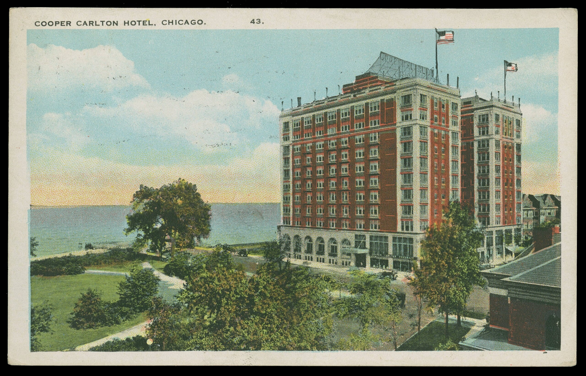

Paul Cornell bought sixty lakefront acres in 1853 and kept buying until he held about 300. He named the area Hyde Park to give it a refined image, gave the Illinois Central sixty acres for a station and daily trains, and recruited families who were wealthy and white.


The park campaign was run by landowners whose property the parks would raise in value, and Cornell held 300 acres beside the ground he was asking the state to improve. The commissioners bought 1,055 acres of sandbar and marsh and hired Frederick Law Olmsted and Calvert Vaux. The Great Fire burned their drawings, and Jackson Park sat mostly unfinished for twenty years.

country of 65 million
Chicago placed the fair on the unfinished park and raised the White City in about two years. Nearby land values began rising as soon as the site was announced. Fires destroyed most of it in 1894.
Black Americans were shut out of the fair's planning, its exhibit halls, and nearly all of its jobs. Organizers offered one Colored American Day, and Frederick Douglass worked the season from the Haiti Pavilion. At the gates, he and Ida B. Wells handed out The Reason Why the Colored American Is Not in the World's Columbian Exposition.



